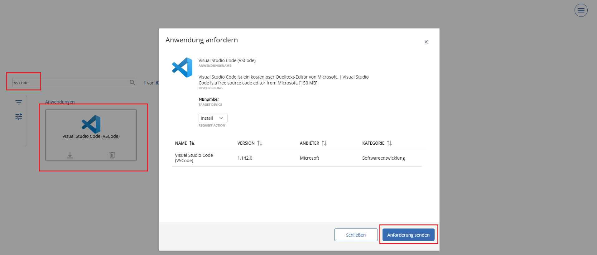
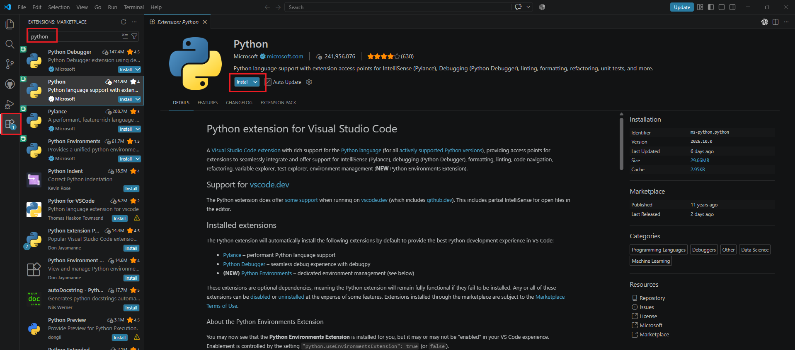
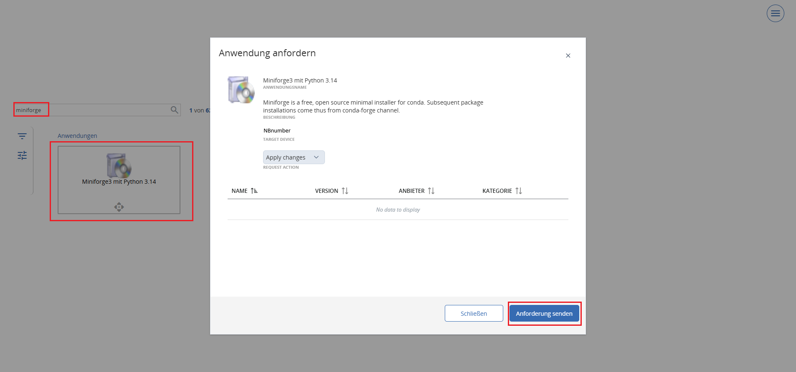
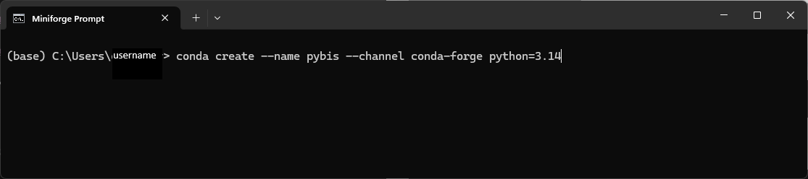
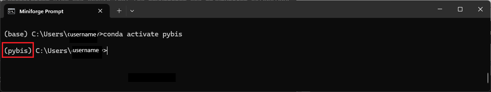
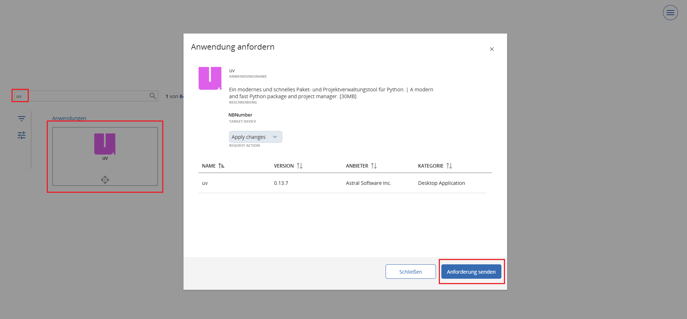
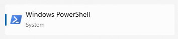
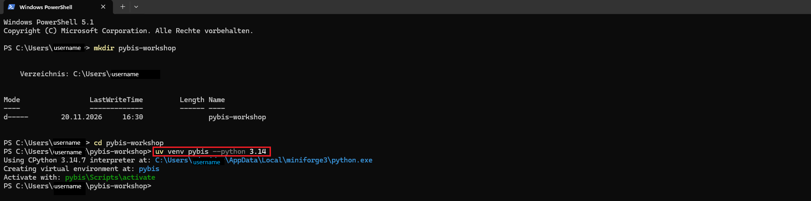
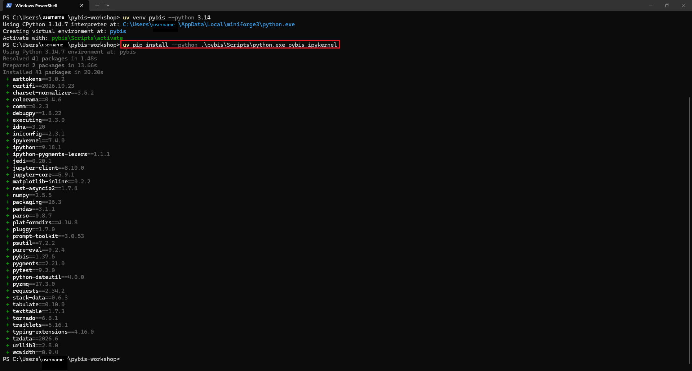
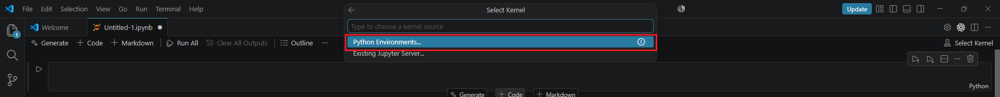

Set up your workshop environment and install pyBIS
A step-by-step guide for researchers with no prior experience in Python or command-line tools such as Miniforge Prompt, Windows PowerShell or Jupyter Notebooks.
This guide helps you prepare your computer and set up the environment to work with pyBIS package for the first time. It includes the environment named pybis required for the workshop. You do not need programming experience to complete this guide.
What tools will you use?
- Python: the programming language used in the workshop.
pyBIS: a Python package for communicating with openBIS.ipykernel: a Python package that allows Jupyter Notebooks to run Python code.- Miniforge3: a minimal installer for conda, which is used here to create and manage the isolated Python environment and install workshop packages.
- uv: a modern Python package and environment manager.
- Visual Studio Code (VS Code): an application for writing and running code.
- Jupyter Notebook: an interactive document where you can write and run Python code one cell at a time.
- pybis Python environment: a separate workspace containing a Python version and the packages needed for the workshop.
Step 1: Install Visual Studio Code
1.1 Install VS Code
- Open the Symantec Software Portal.
- Search for Visual Studio Code and install it.
- Open VS Code from the Windows Start menu.

1.2 Install the Python and Jupyter extensions
- In VS Code, click the Extensions icon (four squares) in the left sidebar.
- Search for Python, select the extension published by Microsoft, and click Install.

- Search for Jupyter, select the extension published by Microsoft, and click Install.

If you see Installed or Uninstall, the extension is already installed.
Step 2: Create pybis environment and install pyBIS package
What is a Python environment? A Python environment is a separate workspace containing a specific Python version and the packages needed for a project, such as pyBIS and ipykernel.
Why is creating an environment good practice? It keeps the workshop's packages separate from those used in other projects. This helps prevent conflicts between package versions, makes troubleshooting easier and allows you to work on different projects without affecting each other's setup.
For this workshop, a dedicated environment named pybis helps everyone work with a consistent Python setup while keeping their existing Python installations and projects unaffected.
After the workshop:
You can continue using this environment to work with pyBIS
and manage your own research data in openBIS.
You do not need to create a new environment every time
you use pyBIS. Simply activate and reuse it.
What if the environment stops working? Python environments can usually be repaired or recreated. Before creating a new one, try these troubleshooting steps:
- Check that you have activated the correct Python environment.
- Check that VS Code or Jupyter is using the correct Python kernel.
- Check that
pyBISand the required packages are installed in that environment. - If necessary, reinstall missing packages or recreate the environment.
Remember: Recreating your Python environment does not affect research data stored in openBIS. Your notebooks and local research files will also remain safe as long as they are saved outside the environment folder.
Choose to install either Miniforge3 or uv
Miniforge3 (Option A, steps 2.1a - 2.5a) is particularly suitable for scientific work and data analysis, especially when projects require complex scientific packages or non-Python dependencies. Both options support pyBIS and Jupyter Notebooks, so the choice depends on your workflow and preferences.
Option A: Installation with Miniforge3
2.1a Install Miniforge3
- Open the Symantec Software Portal.
- Search for Miniforge.
- Install Miniforge3 and wait until installation is complete.

2.2a Open Miniforge Prompt
- Click the Windows Start button.
- Search for Miniforge Prompt and open it.

Miniforge Prompt is a window where you enter commands to manage conda environments and run Python. You will use it to create the environment named pybis and install pyBIS and ipykernel packages.
For each command below, copy the text from the code box, paste it into the Miniforge Prompt (usually using Ctrl + V or right-click), and press Enter. Wait until the command finishes before continuing.
2.3a Create the pybis environment
- Copy the command below, paste it into the Miniforge Prompt, and press Enter.
conda create --name pybis --channel conda-forge python=3.14conda-forge is the package repository to obtain the software.

If the Miniforge Prompt asks Proceed ([y]/n)?, type y and press Enter.

2.4a Activate the environment
- Copy the command below, paste it into the Miniforge Prompt, and press Enter:
conda activate pybisYou should see (pybis) at the beginning of the command line, for example (pybis) C:\Users\yourusername>. This indicates that the environment is activate in Miniforge Prompt.

2.5a Install pyBIS and prepare the environment for Jupyter Notebooks
- Copy the command below, paste it into the Miniforge Prompt, and press Enter.
conda install --channel conda-forge pybis ipykernel
pyBIS and ipykernel are installed. Close Miniforge Prompt and continue with Step 3.Option B: Installation with uv
2.1b Install uv
- Open the Symantec Software Portal.
- Search for uv.
- Install uv and wait until installation is complete.

2.2b Open Windows PowerShell
- Click the Windows Start button.
- Search for Windows PowerShell and open it.

- Verify the installation by checking the version. Copy and paste the command below into the PowerShell window and press Enter.
uv --version
- Navigate to the directory where you want to work during the workshop or create a new one.
cd "C:\path\to\your\folder"or
mkdir pybis-workshop
cd pybis-workshop
2.3b Create the pybis environment
- Copy and paste the command below to create the pybis environment.
uv venv pybis --python 3.14By executing this command, a virtual environment named pybis with Python 3.14 will be created.

2.4b Install pyBIS and prepare the environment for Jupyter Notebooks by installing ipykernel
- Copy and paste the command below, and install the
pyBISandipykernelpackages in the pybis environment.
uv pip install --python .\pybis\Scripts\python.exe pybis ipykernel
pyBIS and ipykernel packages.pyBIS and ipykernel packages is ready. Close Windows PowerShell and continue with Step 3.Step 3: Open a Jupyter Notebook and select the pybis environment
3.1 Open a Jupyter Notebook in VS Code
- Open Visual Studio Code (VS Code).
- Choose File → New File.
- Select Jupyter Notebook.

3.2 Select the pybis environment
Before running Python code, choose which Python environment the notebook will use. In a Jupyter Notebook, this is means selecting a kernel (the Python interpreter that runs your code).
- Click Select Kernel in the upper-right corner of the notebook.

- Choose Python Environments.

- Select the pybis environment you created in Step 2.

Depending on the installation method, the paths may differ slightly. For Miniforge3, the path is usually C:\Miniforge3\envs\pybis\python.exe. For uv, the path is usually .\path\to\your\folder\pybis\Scripts\python.exe.

In case, pybis environment is not listed in the dropdown, open the folder first by clicking on File → Open Folder, and navigating to the pybis_workshop folder. Repeat the kernel selection process.

Step 4: Test your pyBIS installation
4.1 Run your first Python code
- Copy the code below and paste it into a notebook code cell.
- Press
Shift + Enterto run the code.
print("Hello! My Python environment is working.")You should see:
Hello! My Python environment is working.This confirms that the notebook can run Python code.
4.2 Check that pyBIS is installed
- Move your mouse below the code cell you just ran.
- Click + Code to add a new code cell.
- Copy the code below, paste it into the new cell and press Shift + Enter.
import pybis
print("pyBIS was imported successfully!")You should see the following output:
pyBIS was imported successfully!import mean? In Python, import makes a package available for use in your code. If the cell runs without errors, pyBIS can be imported from the selected environment. You do not need to connect to an openBIS server for this test.4.3 Save the Jupyter Notebook and Activate Auto Save
- Open File → Save As.
- Choose a folder and save the notebook as
pybis_installation_test.ipynb.
- Select File → Auto Save to activate the auto-save for future edits.
pyBIS can be imported, and your notebook is saved. You are ready to start working with pyBIS.Troubleshooting: Common issues
First identify the error and probable cause
If error occurs when trying to import pybis, or VS Code cannot start the notebook kernel, this is an installation/environment problem. If pyBIS imports successfully but you cannot log into the openBIS, this is a connection or authentication problem.
Self-help check 1 — Find your environment and verify installed packages
Miniforge Prompt
Open Miniforge Prompt from the Windows Start menu. If it is missing, confirm that Miniforge3 was installed through the Symantec Software Portal (Step 2.1a).
conda env listLook for an environment named pybis. If you see EnvironmentNameNotFound when activating, check the name shown in this list. If pybis is absent, follow Step 2 to create it.
Verify installed packages in pybis, by first activating the environment ((pybis) will appear before the command line).
conda activate pybisConfirm installed packages in the environment. The output will show the installed package and version as a table.
conda list pybis
conda list ipykernel
If either package is missing from the environment, install the packages using the same command as Step 2.5a:
conda install --channel conda-forge pybis ipykernelRestart the kernel in the Jupyter Notebook after the installation.
uv
There isn't a direct equivalent ofconda env list because uv typically manages virtual environments per project. Open Windows PowerShell from the Windows Start menu. If it is missing, confirm that uv was installed through the Symantec Software Portal (Step 2.1b).
If you do not know where the project folder is, search your Windows user folder for pyproject.toml, the project configuration file. In PowerShell, run:
Get-ChildItem -Path $HOME -Filter pyproject.toml -File -Recurse -ErrorAction SilentlyContinue | Select-Object -ExpandProperty FullNameThe search lists matching files. Navigate to the folder containing the relevant pyproject.toml (replace the example path with that folder):
Set-Location "C:\path\to\project"List packages installed in the project's pybis environment.
uv pip list --python .\pybis\Scripts\python.exeConfirm installed pyBIS and ipykernel packages in the list. If they are missing, follow Step 2 to install them.
Self-help check 2 — Select the correct kernel in the Jupyter Notebook
In Jupyter Notebook, click Select Kernel → Python Environments → pybis, as shown in Step 3. Note that depending on the installation method, the path of the environment will vary. Run this command in the code cell to verify the path:
import sys
print(sys.executable)If an error occurs, make sure that the environment is correctly installed. Verify by following the self-help check 1.
Last resort — Recreate the environment
Miniforge Prompt
Open Miniforge Prompt, deactivate the environment and remove only the environment named pybis:
conda deactivate
conda env remove --name pybisThen recreate it, if needed, with all commands from Step 2.1a.
uv
To remove the uv environment without deleting your project, open Windows PowerShell and navigate to the project folder. If the environment is active in this terminal, deactivate it; then remove only the environment folder:
deactivate
Remove-Item -LiteralPath .\pybis -Recurse -ForceIf deactivate is not recognized, close the terminal and open a new PowerShell window. Before running the removal command, confirm that pybis is the virtual-environment folder (it contains Scripts\python.exe). This removes the environment and its installed packages, not the project files. Recreate it by following Step 2.1b.
Connection problems — pyBIS imports, but openBIS cannot be reached
Example: import pybis succeeds, but a later notebook cell cannot connect or log in to your openBIS server. This is different from a missing-package or kernel problem; do not recreate the Python environment just because a login fails.
- Check that the openBIS server address in the workshop notebook is correct.
- Check your network/VPN connection and whether you can access the openBIS web interface in your browser.
- Check your credentials or authentication method without sharing passwords or tokens in screenshots or Teams messages.
- If the web interface also fails, or access is denied, contact the Data Store team or IT support with the error message (redact sensitive details).
Updating packages after the workshop
If you have not used the environment for a while, you may want to update its installed packages. Updates can change package versions, so do not update as your first troubleshooting step immediately before the workshop.
Miniforge Prompt
Open Miniforge Prompt, activate the pybis environment, and run the following command to update all packages in the environment:conda update -n pybis --all -c conda-forgeuv
In Windows PowerShell, navigate to the project folder and upgrade the packages with:
$packages = (uv pip list --python .\pybis\Scripts\python.exe --format json | ConvertFrom-Json).nameuv pip install --python .\pybis\Scripts\python.exe --upgrade $packagesAfter updating, restart the kernel, select the pybis kernel and repeat the Step 4 tests. If you still need help, share a screenshot of the error in the workshop Microsoft Teams channel, without including credentials or tokens.
Back to top